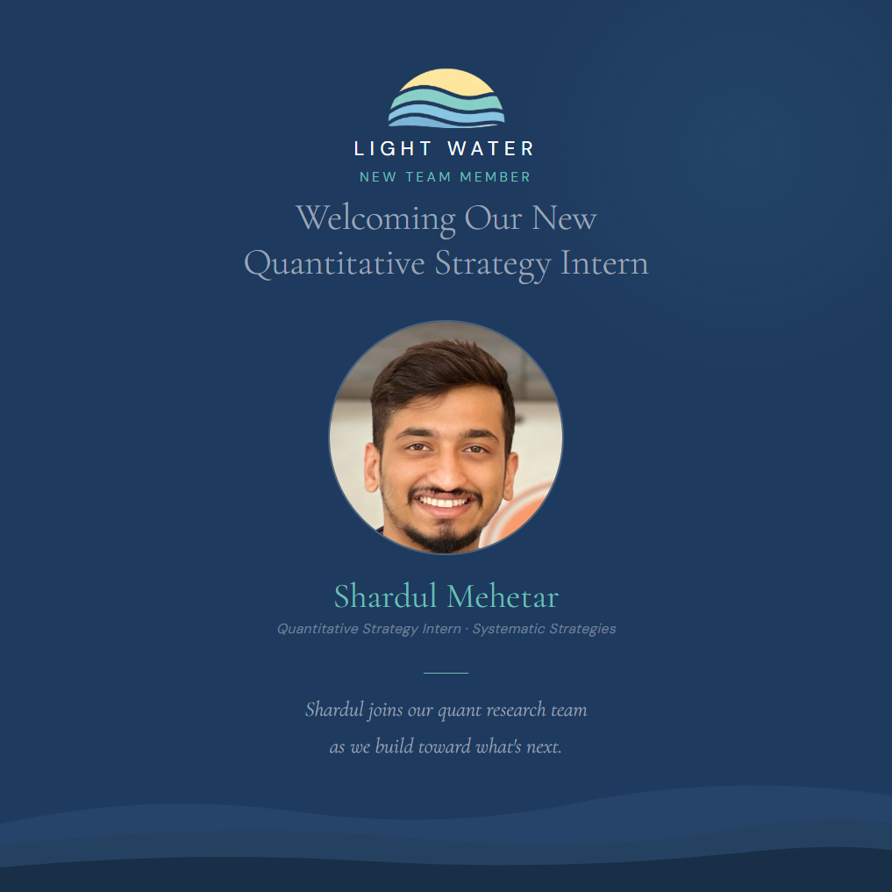

We're pleased to announce that Shardul Mehetar has joined Light Water Capital as a Quantitative Strategy Intern on our Systematic Strategies team.
Shardul is completing his MS in Data Science at the University of Delaware, after earning a BTech in Computer Science from Terna Engineering College. Before Light Water, he spent a year as a Data Scientist at Tata Consultancy Services, building and validating probability-of-default models for a large banking client - work that involved logistic regression and XGBoost, drift monitoring, and champion-challenger testing against live production models.
From Credit Risk to Strategy Validation
That background turns out to be good preparation for quantitative trading research. The two fields share a common discipline: a model is only as good as its ability to survive contact with data it wasn't trained on. Shardul brings the same instinct to strategy research that he applied to credit risk - build the model, then spend most of your time trying to prove it wrong.
In practice, that means taking a market hypothesis, turning it into a testable rule, and running it through walk-forward testing, Monte Carlo robustness checks, sub-period analysis, slippage and commission sensitivity, and parameter stability testing before anyone trusts the result. A backtest that looks great on the first pass is a starting point, not a conclusion.
What He's Working On
Shardul's research covers systematic U.S. equity and ETF strategies with multi-day holding periods and T+1 execution, spanning momentum, mean reversion, residual momentum, volatility targeting, and regime detection. He also contributes to portfolio-level risk controls and exposure scaling, and supports our Python research tooling - data cleaning, trade-log analysis, backtest diagnostics, and performance reporting. Separately, he's been doing futures research around NQ and ES, looking at volatility regimes and execution costs through FOMC and CPI stress windows.
Building the Team
We hire for impact, not headcount. Shardul stood out for the same reason most of our research hires do: he treats a promising backtest as a question to be interrogated rather than an answer to be trusted. That skepticism - is this real, or overfit, or survivor-biased, or just lucky - is exactly the mindset our research process depends on.
We're looking forward to what he brings to the team.
Leave a comment - join the conversation
Share your thoughts, questions, or insights on this article. We'd love to hear your perspective.
Comment on LinkedIn